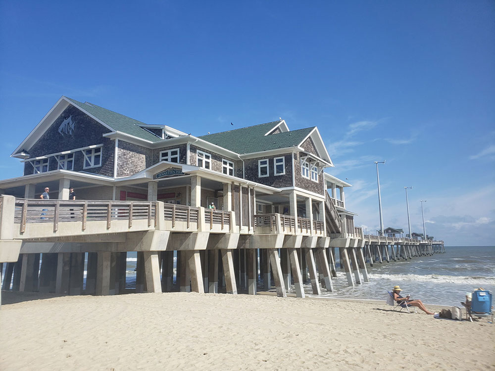
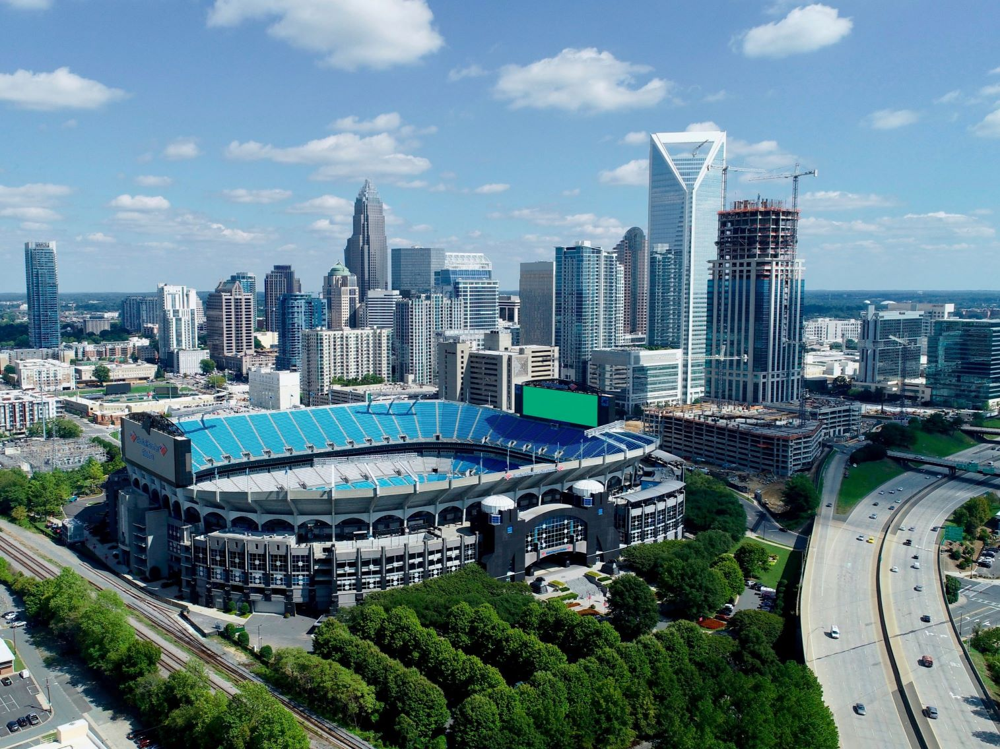
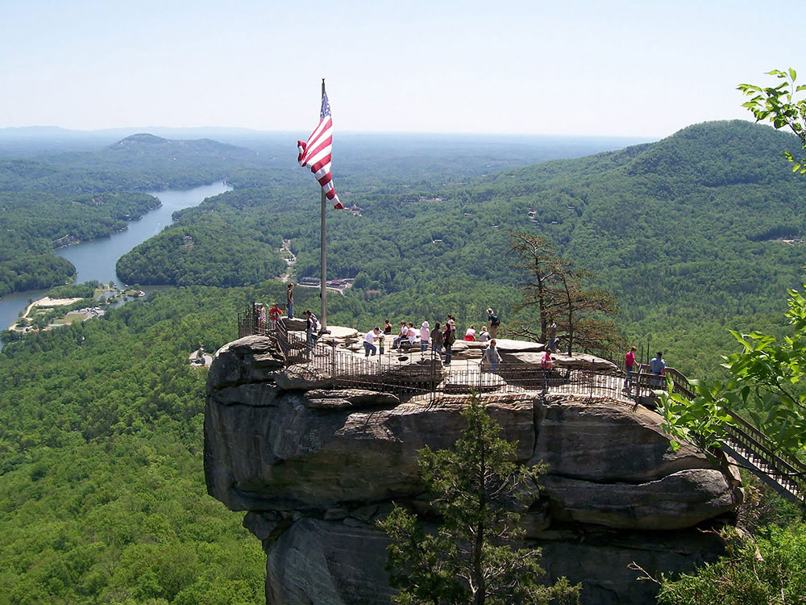
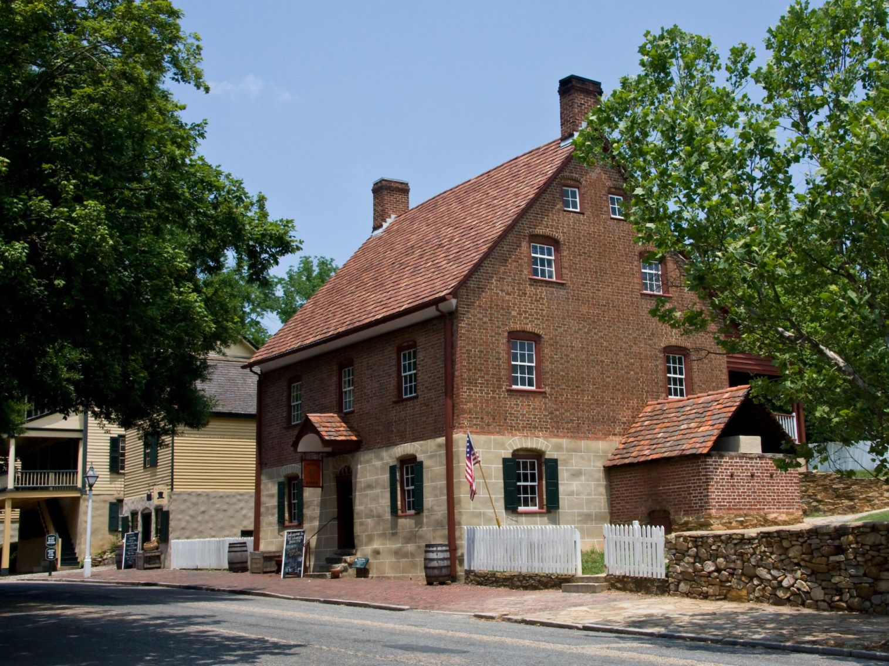

North Carolina Travel Guide
Hike the Blue Ridge Mountains, relax on the Outer Banks' beaches, and explore vibrant Charlotte and Raleigh's Research Triangle culture.
Top Locations


North Carolina Map
Places to See in North Carolina
Mark Turner, Public domain, via Wikimedia Commons; Image Size Adjusted

Asheville★
Largest city in Western North Carolina featuring Art Deco Asheville City Hall, Basilica of St. Lawrence, Biltmore Estate, Blue Ridge Parkway and River Arts District

Blue Ridge Parkway★
National Parkway and All-American Road, noted for its scenic beauty, is America's longest linear park, running 469 miles (755 km) through 29 Virginia and North Carolina counties, linking Shenandoah National Park to Great Smoky Mountains National Park
Pisgah National Forest★
Vast mountain forest encompassing scenic waterfalls, rugged peaks, wild rivers, and hundreds of miles of recreational trails across some of the most diverse landscapes in the Southern Appalachians.

Jeanette's Pier
Outer Banks★
200-mile (320 km) string of barrier islands off the coast of North Carolina and a major tourist destination known for their wide expanse of open beachfront and the Cape Hatteras National Seashore

Charlotte, NC
Dallas Epperson, CC BY-SA 3.0, via Wikimedia Commons; Image Size Adjusted

Cities

Chimney Rock State Park
Dallas Epperson, CC BY-SA 3.0, via Wikimedia Commons; Image Size Adjusted

Chimney Rock State Park
Dallas Epperson, CC BY-SA 3.0, via Wikimedia Commons; Image Size Adjusted
Museums and Other Attractions
- Emerald Village★
- Greensboro History Museum★
- Guilford Courthouse National Military Park★
- Hawksbill Mountain★
- International Civil Rights Center and Museum★
- Museum of North Carolina Minerals★
- Old Salem Museums and Gardens★
- Southern Highland Craft Guild Folk Art Center★
- Tryon Palace★
- University of North Carolina at Chapel Hill★
Overview
North Carolina is a Southeastern state of about 10.8 million people, with mountains, piedmont cities, and a long Atlantic coast. Raleigh is the capital, Charlotte is the largest city, and the state is named for King Charles I of England.
Visitors come for the Blue Ridge Parkway, the most visited unit of the National Park System, the arts and craft scene of Asheville, and the Great Smoky Mountains. Others come for the beaches and lighthouses of the Outer Banks, the history and food of Wilmington, Durham, and Chapel Hill, and the barbecue, basketball, and NASCAR culture of the Piedmont.
Geography
North Carolina has three regions. The Coastal Plain stretches from the Outer Banks, a chain of barrier islands, to flat farmland and swamps. The Piedmont is rolling hills and the state's urban heart, and the Appalachian Mountains in the west include the Blue Ridge and Great Smokies. Mount Mitchell, at 6,684 feet (2,037 m), is the highest point east of the Mississippi River. Cape Hatteras and Cape Lookout are known for dangerous shoals.
History
Cherokee, Tuscarora, Lumbee, and other peoples lived in North Carolina when English colonists tried to settle Roanoke Island in 1585, and the "Lost Colony" vanished. Permanent settlement followed in the 1650s, and North Carolina became the 12th state in 1789. Tobacco, cotton, and textiles shaped the economy, the state joined the Confederacy in 1861, and in 1903 the Wright brothers flew at Kitty Hawk. The Greensboro sit-ins of 1960 helped spark the civil rights movement, and the Research Triangle later became a center of technology and research.
Appalachian Mountains
Western North Carolina is part of the southern Appalachian Mountains, one of the oldest mountain ranges on Earth, and it holds the highest peaks in the eastern United States. The Blue Ridge, Great Smoky, Black, Unaka, and Balsam ranges rise above deep river valleys, and Mount Mitchell, at 6,684 feet (2,037 m), is the tallest of them all. Waterfalls, rhododendron balds, and some of the most biologically diverse forests in the temperate world draw hikers, anglers, and leaf-peepers. The region is also the home of the Eastern Band of Cherokee Indians, whose story is told at the Museum of the Cherokee People, and of a long tradition of Appalachian music, crafts, and folk art. Attractions such as Grandfather Mountain, Chimney Rock, and Gorges State Park show off the range, and the Appalachian Trail follows the Tennessee border along the Great Smokies.
Asheville
Asheville is the cultural center of the North Carolina mountains, a city of about 95,000 people ringed by the Blue Ridge. It is best known for the Biltmore Estate, the 250-room mansion built by George Vanderbilt in the 1890s and still the largest privately owned house in the country. The city has a lively downtown of Art Deco buildings, craft breweries, and farm-to-table restaurants, the studios of the River Arts District, and the North Carolina Arboretum. Literary visitors tour the Thomas Wolfe Memorial, and the Folk Art Center on the parkway celebrates regional crafts. Asheville was badly damaged by Hurricane Helene in September 2024, and some businesses and nearby roads recovered over the following year, so it is wise to check current conditions before traveling.
Blue Ridge Parkway
The Blue Ridge Parkway is a 469-mile scenic road that links Shenandoah National Park in Virginia with Great Smoky Mountains National Park, and about 252 miles of it run through western North Carolina. Construction began in 1935, and it is the most visited unit of the National Park System, with a 45 mph speed limit that encourages slow, scenic driving. Highlights in North Carolina include the engineering marvel of the Linn Cove Viaduct, the Mile High Swinging Bridge at Grandfather Mountain, the Craggy Gardens rhododendron blooms, the Rough Ridge boardwalk, and Waterrock Knob. The highest point on the parkway, at Richland Balsam, is 6,053 feet. Fall color is spectacular in October, but sections can close in winter and after storms.
Charlotte
Charlotte, the "Queen City," is North Carolina's largest city and one of the fastest-growing in the country, with a metro area of more than 2.7 million people. It is the second largest banking center in the United States after New York, with the headquarters of Bank of America and a major Wells Fargo presence. Visitors come for the NASCAR Hall of Fame, the Hendrick Motorsports Museum, and the U.S. National Whitewater Center. The city has a lively uptown with the Mint Museum, the Bechtler Museum of Modern Art, and Romare Bearden Park, and it is home to the Carolina Panthers and Charlotte Hornets.
Research Triangle
The Research Triangle is the area around Raleigh, Durham, and Chapel Hill, anchored by three major universities: North Carolina State University, Duke University, and the University of North Carolina at Chapel Hill. Research Triangle Park, established in 1959 and one of the largest research parks in the world, is home to technology, pharmaceutical, and biotechnology companies. Raleigh, the state capital, has the State Capitol and a strong museum district with the North Carolina Museum of Art and the Museum of Natural Sciences. Durham has Duke University and its gardens, the American Tobacco Trail, and a celebrated food and music scene, while Chapel Hill is the home of the nation's first public university. College basketball rivalries between Duke, UNC, and NC State are a Triangle institution.
Outer Banks
The Outer Banks are a chain of narrow barrier islands that stretch about 200 miles along the North Carolina coast, separating the Atlantic Ocean from Pamlico and Albemarle Sounds. Cape Hatteras National Seashore, the first national seashore in the country, protects much of the shoreline, and its black-and-white-striped Cape Hatteras Lighthouse, the tallest brick lighthouse in the U.S., guards the "Graveyard of the Atlantic," where hundreds of ships have wrecked. The Wright Brothers National Memorial at Kill Devil Hills marks the site of the first powered flight in 1903, Jockey's Ridge State Park has the tallest natural sand dune system on the East Coast, and the Fort Raleigh site tells the story of the Lost Colony. Visitors also come for surfing, fishing, wild horses at Corolla, and beach rentals, and summer is the busiest season, with hurricane risk from June through November.
National Protected Areas
North Carolina is home to Great Smoky Mountains National Park, shared with Tennessee, and the Blue Ridge Parkway, which has over 250 miles in the state. Cape Hatteras and Cape Lookout National Seashores protect the Outer Banks, the Wright Brothers National Memorial marks the first flight, and Fort Raleigh National Historic Site marks the site of the Lost Colony. Guilford Courthouse National Military Park preserves a Revolutionary War battlefield, and the Appalachian Trail and Overmountain Victory Trail cross the state.
State Parks and Historic Sites
North Carolina has an outstanding state park system. Grandfather Mountain has the Mile High Swinging Bridge, Chimney Rock is a rock spire with views over Hickory Nut Gorge, and Mount Mitchell is the highest point in the east. Stone Mountain, Hanging Rock, Pilot Mountain, and Crowders Mountain are popular hikes, and Old Salem and Tryon Palace are historic highlights.
Seasons and When to Visit
Spring and fall are the best seasons, with wildflowers and waterfalls in the mountains in spring and brilliant color along the Blue Ridge Parkway in October. Summer is hot and humid in the Piedmont and coast, but the mountains are cooler, and the Outer Banks are busiest from Memorial Day to Labor Day. Winters are mild on the coast and cold in the mountains, with skiing around Boone and Banner Elk. Hurricane season runs June through November.
Barbecue
Pork barbecue is a staple, and regional rivalries run deep. Western (Lexington-style) barbecue uses pork shoulder with a tomato-based sauce, and the Lexington Barbecue Festival draws more than 100,000 visitors each October. Eastern barbecue cooks the whole hog with a vinegar-and-red-pepper sauce.
This article uses material from the Wikipedia article "North_Carolina", which is released under the Creative Commons Attribution-Share-Alike License 3.0. Additional information was drawn from National Park Service, North Carolina State Parks, and Visit North Carolina.